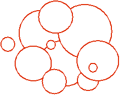

Problem F
Sweet Dream
Are
you ready to have a sweet dream? OK! Close your eyes (Hey! Do NOT! I was
kidding! How can you read the problem statement with your eyes closed? Umm! Let
me think . . . Yes! There is a good solution to this problem. Simply, hand this
paper to your teammate and let him read it aloud for you)!
.
. . You are standing in the middle of a room and you have a handful of discs of
different sizes. They are heavy. You somehow feel uncomfortable. Calm down and don’t
worry! I am going to help you feel comfortable again. Simply choose one of the
discs in your hand randomly and drop it on the floor. Yes! You feel a little
more comfortable. Choose and drop another! Then another one! . . . And continue
this process until your hands are empty. Now, you are as light as a feather and
you are ready to fly away . . .
But
don’t be so quick! Before flying away, you should solve a problem. Open your
eyes and take a look at the floor. You see the discs you’ve just dropped (To
the teammate reading this problem aloud: Show the contents of figure 1 to your
teammate who is going to open his eyes now).

Figure 1. Discs on the floor viewed from the above
You
can see that some discs are partially (or totally) covered by other discs. Your
job is to compute the total perimeter of parts of the discs that you can see
from the above.
Umm!
I think you feel a little bit uncomfortable again. Am I right?
The Input
The
first line of input contains a single integer which is the number of
test cases. Each test case starts with a single integer , the number of discs originally in your hand followed by lines, the th of which containing three floating-point numbers which are
, radius of the th disc and the coordinates of the
point on the floor on which the disc has fallen. Two floating-point numbers are
assumed to be equal if their absolute difference is less than
.
The Output
Output
for each test case consists of a line containing a floating-point number which
is the total perimeter of part of discs that can be seen from above rounded to
3 decimal digits after the fraction point. The number should have exactly 3
digits after the fraction point.
Sample Input
3
1
10 0 0
2
5 0 0
10 0 0
2
1 0 0
1 1 0
Sample Output
62.832
62.832
10.472
Amirkabir University of Technology - Local Contest - Round #2